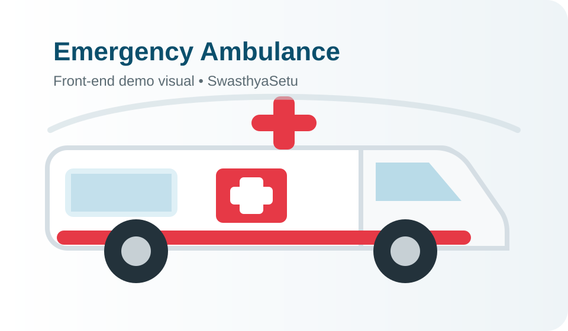

<!doctype html><html><head><meta charset="utf-8"><meta name="viewport" content="width=device-width,initial-scale=1"><title>SwasthyaSetu</title><link rel="stylesheet" href="assets/styles.css"></head><body><script>if(sessionStorage.getItem('ssLoggedIn')!=='1'){location.replace('login.html');}</script><script>(function(){if(sessionStorage.getItem('ssWelcomePending')!=='1')return;sessionStorage.removeItem('ssWelcomePending');function speakWelcome(){try{speechSynthesis.cancel();const voices=speechSynthesis.getVoices();const male=voices.find(v=>/david|mark|guy|george|daniel|alex/i.test(v.name))||voices.find(v=>v.lang&&v.lang.toLowerCase().startsWith('en')&&/male|man/i.test(v.name))||voices.find(v=>v.lang&&v.lang.toLowerCase().startsWith('en'));const utterance=new SpeechSynthesisUtterance('Welcome to Swasthya Setu app');if(male)utterance.voice=male;utterance.lang='en-US';utterance.rate=.82;utterance.pitch=.9;utterance.volume=1;speechSynthesis.speak(utterance)}catch(e){}}if(speechSynthesis.getVoices().length)speakWelcome();else{speechSynthesis.onvoiceschanged=()=>{speechSynthesis.onvoiceschanged=null;speakWelcome()};setTimeout(speakWelcome,700)}})();</script><script src="assets/shared.js"></script><script src="assets/api.js"></script><script>ssPage('index.html', `<div class="page-head"><div><h1 data-en="Welcome to SwasthyaSetu" data-hi="स्वास्थ्यसेतु में आपका स्वागत है">Welcome to SwasthyaSetu</h1><p data-en="Connected care for rural public healthcare" data-hi="ग्रामीण सार्वजनिक स्वास्थ्य के लिए जुड़ी हुई देखभाल">Connected care for rural public healthcare</p></div><span class="badge">● <span data-en="Live Demo" data-hi="लाइव डेमो">Live Demo</span></span></div>
<section class="hero-card dashboard-hero"><div><div class="eyebrow" style="color:#b8d7e2" data-en="SIH26133 • Unified rural healthcare" data-hi="SIH26133 • एकीकृत ग्रामीण स्वास्थ्य सेवा">SIH26133 • Unified rural healthcare</div><h2 data-en="From symptom check to hospital admission — one connected journey." data-hi="लक्षण जांच से अस्पताल में भर्ती तक — एक जुड़ी हुई यात्रा।">From symptom check to hospital admission — one connected journey.</h2><p data-en="Check severity, compare hospitals, see doctors and bed availability, request an ambulance, and discover government schemes from one dashboard." data-hi="गंभीरता जांचें, अस्पतालों की तुलना करें, डॉक्टर और बेड उपलब्धता देखें, एम्बुलेंस अनुरोध करें और एक ही डैशबोर्ड से सरकारी योजनाएं खोजें।">Check severity, compare hospitals, see doctors and bed availability, request an ambulance, and discover government schemes from one dashboard.</p><div style="display:flex;gap:10px;flex-wrap:wrap"><a class="btn red" href="triage.html">✚ <span data-en="Check Severity" data-hi="गंभीरता जांचें">Check Severity</span></a><a class="btn outline" href="emergency-network/ambulance.html">🚑 <span data-en="Find Ambulance" data-hi="एम्बुलेंस खोजें">Find Ambulance</span></a></div></div></section>
<section class="metrics"><div class="metric" data-route="triage.html" role="link" tabindex="0"><div class="metric-icon">⚠</div><div><b id="mHigh">3</b><span data-en="High-Risk Follow-ups" data-hi="उच्च जोखिम फॉलो-अप">High-Risk Follow-ups</span><small data-en="Priority today" data-hi="आज प्राथमिकता">Priority today</small></div></div><div class="metric blue" data-route="asha-dashboard.html" role="link" tabindex="0"><div class="metric-icon">♟</div><div><b id="mTasks">2</b><span data-en="ASHA Tasks Pending" data-hi="लंबित ASHA कार्य">ASHA Tasks Pending</span><small data-en="Open worklist" data-hi="खुली कार्यसूची">Open worklist</small></div></div><div class="metric green" data-route="emergency-network/doctor-availability.html" role="link" tabindex="0"><div class="metric-icon">⚕</div><div><b>8</b><span data-en="Doctors in Network" data-hi="नेटवर्क में डॉक्टर">Doctors in Network</span><small data-en="Live demo roster" data-hi="लाइव डेमो रोस्टर">Live demo roster</small></div></div><div class="metric purple" data-route="emergency-network/icu-beds.html" role="link" tabindex="0"><div class="metric-icon">▤</div><div><b>218</b><span data-en="Beds Available" data-hi="उपलब्ध बेड">Beds Available</span><small data-en="Across network demo" data-hi="नेटवर्क डेमो में">Across network demo</small></div></div></section>
<section class="grid-2 dashboard-feature-grid"><div class="panel"><div class="panel-head"><h3 data-en="Hospital Availability" data-hi="अस्पताल उपलब्धता">Hospital Availability</h3><a href="emergency-network/hospitals.html" data-en="View all" data-hi="सभी देखें">View all</a></div><div class="panel-pad"><div class="table-wrap"><table class="table"><thead><tr><th data-en="Hospital" data-hi="अस्पताल">Hospital</th><th data-en="General" data-hi="सामान्य">General</th><th data-en="ICU" data-hi="आईसीयू">ICU</th><th data-en="Status" data-hi="स्थिति">Status</th></tr></thead><tbody id="hospitalRows"></tbody></table></div></div></div><div class="panel"><div class="panel-head"><h3 data-en="Doctor & Seat Availability" data-hi="डॉक्टर और सीट उपलब्धता">Doctor & Seat Availability</h3><a href="emergency-network/doctor-availability.html" data-en="See doctors" data-hi="डॉक्टर देखें">See doctors</a></div><div id="doctorRows"></div></div></section>
<section class="grid-2 dashboard-feature-grid"><div class="panel ambulance-panel"><div class="panel-head"><h3 data-en="Ambulance Network" data-hi="एम्बुलेंस नेटवर्क">Ambulance Network</h3><a href="emergency-network/ambulance.html" data-en="Track" data-hi="ट्रैक करें">Track</a></div><div class="panel-pad"><div class="ambulance-preview"><div><b data-en="ALS & BLS units available" data-hi="ALS और BLS यूनिट उपलब्ध">ALS & BLS units available</b><small data-en="3 demo ambulances • route simulation" data-hi="3 डेमो एम्बुलेंस • रूट सिमुलेशन">3 demo ambulances • route simulation</small><a class="btn red btn-sm" href="emergency-network/ambulance.html" data-en="Open tracking" data-hi="ट्रैकिंग खोलें">Open tracking</a></div></div></div></div><div class="panel"><div class="panel-head"><h3 data-en="Government Schemes" data-hi="सरकारी योजनाएं">Government Schemes</h3><a href="schemes.html" data-en="Explore" data-hi="देखें">Explore</a></div><div class="panel-pad scheme-grid"><a class="scheme-card" href="schemes.html"><b>Ayushman Bharat / PM-JAY</b><small data-en="Hospital care financial protection guidance" data-hi="अस्पताल उपचार के लिए वित्तीय सुरक्षा मार्गदर्शन">Hospital care financial protection guidance</small></a><a class="scheme-card" href="schemes.html"><b>Janani Suraksha Yojana</b><small data-en="Maternal and institutional delivery support" data-hi="मातृ एवं संस्थागत प्रसव सहायता">Maternal and institutional delivery support</small></a><a class="scheme-card" href="schemes.html"><b>PMMVY</b><small data-en="Maternity benefit guidance" data-hi="मातृत्व लाभ मार्गदर्शन">Maternity benefit guidance</small></a></div></div></section>
<section class="panel" style="margin-top:18px"><div class="panel-head"><h3 data-en="Role-based Command Centers" data-hi="भूमिका आधारित कमांड सेंटर">Role-based Command Centers</h3><span class="badge">SIH workflow</span></div><div class="panel-pad"><div class="quick-grid"><a class="quick green" href="doctor-dashboard.html"><span>⚕</span><span>Doctor Dashboard</span></a><a class="quick red" href="traffic-police-dashboard.html"><span>🚨</span><span>Traffic Police Dashboard</span></a><a class="quick purple" href="government-dashboard.html"><span>▣</span><span>Government Dashboard</span></a></div></div></section>
<section class="panel severity-banner"><div class="panel-pad"><div><span class="badge" data-en="Safety-first" data-hi="सुरक्षा पहले">Safety-first</span><h3 data-en="Need an urgent assessment?" data-hi="क्या आपको तुरंत आकलन चाहिए?">Need an urgent assessment?</h3><p data-en="Use the severity checker to estimate urgency from symptoms and a demo risk score. It is decision support, not a diagnosis." data-hi="लक्षणों और डेमो जोखिम स्कोर से तात्कालिकता का अनुमान लगाने के लिए गंभीरता जांच का उपयोग करें। यह निदान नहीं, निर्णय सहायता है।">Use the severity checker to estimate urgency from symptoms and a demo risk score. It is decision support, not a diagnosis.</p></div><a class="btn red" href="triage.html">⚠ <span data-en="Open Severity Check" data-hi="गंभीरता जांच खोलें">Open Severity Check</span></a></div></section>
<section class="grid-2" style="margin-top:18px"><div class="panel"><div class="panel-head"><h3 data-en="Priority Care Alerts" data-hi="प्राथमिक देखभाल अलर्ट">Priority Care Alerts</h3><a href="asha-dashboard.html" data-en="View all" data-hi="सभी देखें">View all</a></div><div id="alertList"><div class="list-row"><div class="avatar">🤰</div><div><b data-en="High-risk pregnancy follow-up" data-hi="उच्च जोखिम गर्भावस्था फॉलो-अप">High-risk pregnancy follow-up</b><small data-en="Village visit due today" data-hi="गांव में आज विजिट आवश्यक">Village visit due today</small></div><span class="right pill high">HIGH</span></div><div class="list-row"><div class="avatar">🩺</div><div><b data-en="Chronic care follow-up" data-hi="दीर्घकालिक रोग फॉलो-अप">Chronic care follow-up</b><small data-en="3 patients need review" data-hi="3 मरीजों की समीक्षा आवश्यक">3 patients need review</small></div><span class="right pill medium">MEDIUM</span></div></div></div><div class="panel"><div class="panel-head"><h3 data-en="Quick Actions" data-hi="त्वरित कार्य">Quick Actions</h3></div><div class="quick-grid"><a class="quick red" href="triage.html"><span>✚</span><span data-en="Check Severity" data-hi="गंभीरता जांचें">Check Severity</span></a><a class="quick" href="emergency-network/hospitals.html"><span>🏥</span><span data-en="Hospitals" data-hi="अस्पताल">Hospitals</span></a><a class="quick green" href="emergency-network/doctor-availability.html"><span>⚕</span><span data-en="Doctors" data-hi="डॉक्टर">Doctors</span></a><a class="quick purple" href="emergency-network/icu-beds.html"><span>▤</span><span data-en="Beds" data-hi="बेड">Beds</span></a><a class="quick" href="emergency-network/ambulance.html"><span>🚑</span><span data-en="Ambulance" data-hi="एम्बुलेंस">Ambulance</span></a><a class="quick" href="schemes.html"><span>▣</span><span data-en="Govt. Schemes" data-hi="सरकारी योजनाएं">Govt. Schemes</span></a></div></div></section>`);</script><script>
const DASH_HOSPITALS=[{name:'Sanjeevani General Hospital',gen:'46 / 120',icu:'9 / 24',status:'Available'},{name:'MGM Medical College Hospital',gen:'58 / 140',icu:'7 / 18',status:'Available'},{name:'Tata Main Hospital',gen:'54 / 150',icu:'9 / 20',status:'Available'},{name:"St. Xavier's Care Hospital",gen:'38 / 90',icu:'6 / 14',status:'Available'}];
const DASH_DOCTORS=[{name:'Dr. A. Verma',dept:'Emergency Medicine',seat:'Seat 215 • Available now'},{name:'Dr. R. Mahato',dept:'Orthopaedics',seat:'Seat 220 • Available now'},{name:'Dr. M. Toppo',dept:'Paediatrics',seat:'Seat 297 • Available now'},{name:'Dr. T. Ansari',dept:'Cardiology',seat:'Seat 143 • Available now'}];
hospitalRows.innerHTML=DASH_HOSPITALS.map(h=>`<tr onclick="location.href='emergency-network/hospitals.html'" style="cursor:pointer"><td><b>${h.name}</b></td><td>${h.gen}</td><td>${h.icu}</td><td><span class="pill ok">${h.status}</span></td></tr>`).join('');
doctorRows.innerHTML=DASH_DOCTORS.map(d=>`<div class="list-row clickable-row" onclick="location.href='emergency-network/doctor-availability.html'"><div class="avatar">⚕</div><div><b>${d.name}</b><small>${d.dept}</small></div><span class="right pill ok">${d.seat}</span></div>`).join('');
SS_API.get('/dashboard').then(d=>{mHigh.textContent=d.highRisk;mTasks.textContent=d.pendingAshaTasks}).catch(()=>{});
</script></body></html>